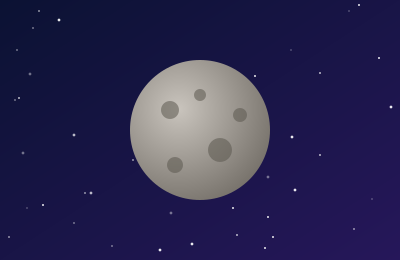
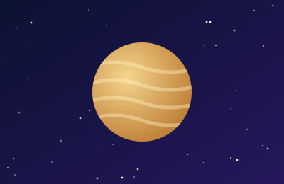
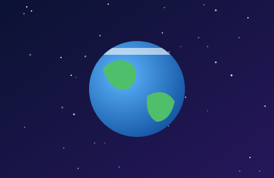
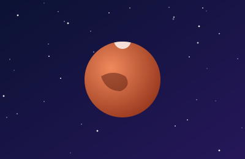
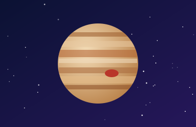
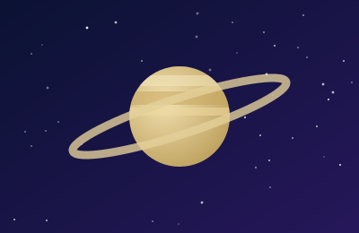
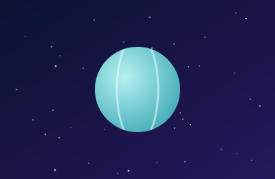
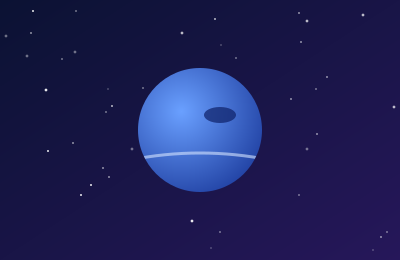

Меркурій
Найменша й найближча до Сонця планета. Рік на ній триває лише 88 земних діб, а поверхня вкрита кратерами, як у Місяця.
Вісім планет Сонячної системи: короткі статті з ілюстраціями та іменами авторів.

Найменша й найближча до Сонця планета. Рік на ній триває лише 88 земних діб, а поверхня вкрита кратерами, як у Місяця.

Найгарячіша планета системи: густа атмосфера з вуглекислого газу створює парниковий ефект, і біля поверхні понад 460 °C.

Єдина відома планета з життям. Понад 70 % її поверхні вкрито водою, а магнітне поле захищає нас від сонячного вітру.

Червона планета з найвищою горою Сонячної системи — вулканом Олімп. Марсоходи шукають на ній сліди давньої води.

Наймасивніша планета. Велика Червона пляма — це гігантський шторм, який спостерігають понад 150 років.

Відомий яскравими кільцями з крижаних частинок. Середня густина планети менша за густину води.

Крижаний гігант, що обертається «лежачи на боці»: вісь нахилена майже на 98°. Має слабкі темні кільця.

Найвіддаленіша планета з найсильнішими вітрами — до 2000 км/год. Синій колір їй надає метан в атмосфері.